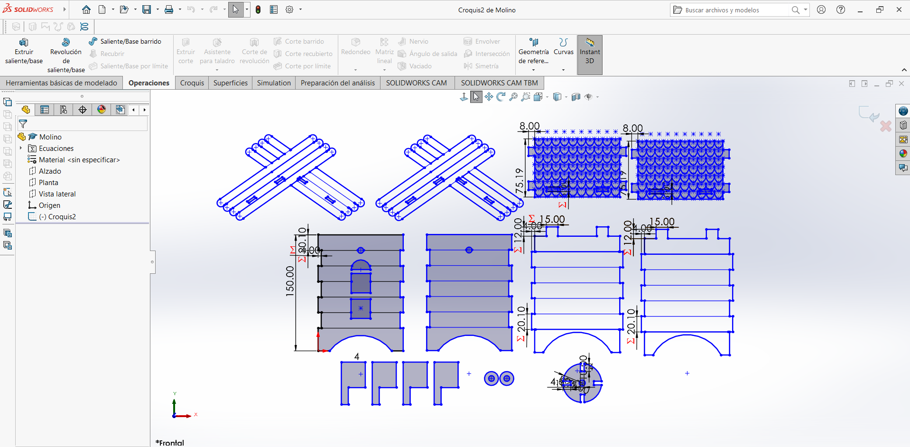
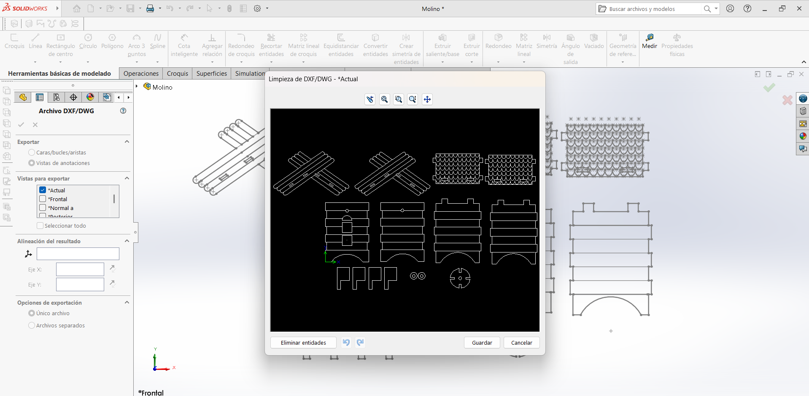
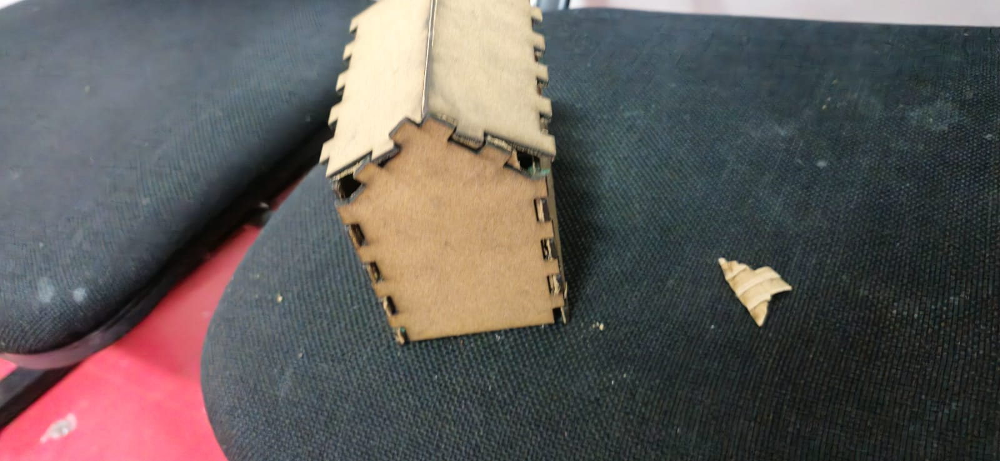

Semana 4: Cortadora láser
Proyecto de Ingeniería
Al principio de la clase de esta semana se nos enseñó todo lo que necesitabamos saber sobre la cortadora, por ejemplo:
Partes de la cortadora
Compuerta: Esta parte se refiere la tapa de la cortadora
Origen del láser: Son los 2 extremos donde se recarga el soporte donde apoya el "Enfocador"
Enfocador: Es la parte de donde sale el láser en si
Panel del control: Aquí podemos controlar donde es el origen del enfocador, moverlo, además de que nos muestra como va el proceso de inicio a fin del corte
Proceso
Para poder usar la cortadora se debe seguir un proceso
-
Diseño: Hay que hacer un diseño por computadora con formato vectorial (DXF)
-
Configuración: En el software para la cortadora indicamos la potencia del lase, que vectores cortar y que otros garbar,etc
-
Corte: Se envía a la máquina la configuración del corte
Materiales
- Molino
- MDF
-
Cartón (Para las aspas)
-
Casa
- MDF
Actividad
Siguiendo el procedimiento mencionado con anterioridad realizamos primero lo que es el diseño en Solidworks para luego guardarlo en el tipo de archivo DXF

También para el diseño se ocupó algo que se nos enseñó en clase, llamadas "Ecuaciones globales" las cuales se pueden observar en la imagen anterior que tienen su símbolo el cual es Σ
Estas nos ayudan evitar estar escribiendo la misma medida una y otra vez en los espacios en los cuales se repiten la misma medida. Para esta actividad los utilizamos en las partes que se ensamblan entre si principalmente
Después de haber terminado el diseño este se guardó en DXF

Una vez guardado el archivo en una USB se llevo la cortadora y se importó el archivo
La configuración que se usó para el corte y grabado fue el siguiente:
- Corte:
- Velocidad: 100
-
Potencia: min-20 y max-25
-
Grabado:
- Velocidad: 30
- Potencia: min-60 y max-80
Ya se envío la configuración a la máquina y solo fue esperar a que se terminara de cortar
Se retiraron tanto las placas de MDF y cartón como las piezas cortadas de estas y ya se armaron los kits de constrcción.
Adrián
Iker
